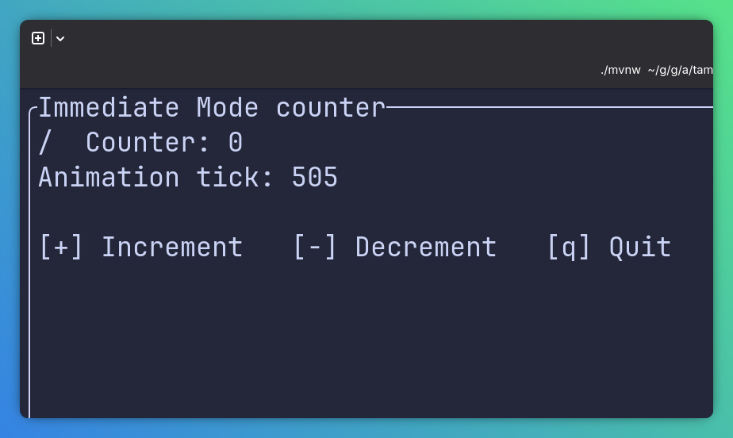

jbang demos@tambouiPress any key to start…
Hey Mr. TamboU(r)Ine man, create a TUI for me
In the jingle jangle JVM I’ll come followin' you
👨👩👧👦 🏊♂️ 🚴 🏃
Software Architect @adesso SE
JUG Paderborn Co-Organizer
JHipster Board Member
Java, in the terminal?
TamboUI
Api Levels
Features
Samples
Shipping & Conclusion
(AI) development tools
Keyboard-first workflows
Windows has a real terminal now
Lightweight (hopefully)
Fast feedback
✅ Server Backends
✅ Cloud
✅ Mobile
✅ Agents
⛔ Terminal Interfaces
Go has Charm and Bubble Tea
Python has Textual
Rust has Ratatui
Java has … 🫙
Java is too slow to start
Too much ceremony
Distribution is a nightmare
Too verbose!
Java is too slow to start! Java is fast, GraalVM even faster
Too much ceremony! JBang anyone?
Distribution is a nightmare! JReleaser?
Too verbose! Modern Java says no (or kotlin)
jbang demos@tambouiTamboUI brings the TUI paradigms seen in things like Rust’s ratatui or Go’s bubbletea to the Java ecosystem. TamboUI is pronounced like "tambouille" (\tɑ̃.buj) in French, or "tan-bouy". It provides a comprehensive set of widgets and a layout system for building rich terminal applications with modern Java idioms.
| TamboUI is still experimental and under active development. |
| API | Responsibility | Use |
|---|---|---|
Toolkit | Declarative components, focus and event routing | Building most applications |
TuiRunner | Managed event loop and terminal lifecycle | Custom event handling without boilerplate |
Immediate Mode | Direct rendering and complete control | Maximum control and speed or you want to create new widgets |
| Module | Description | Requires |
|---|---|---|
| Reliable default on all platforms | Java 8+ |
| Panama (FFM) without third-party dependencies | Java 22+ |
| Aesh based, for SSH/Browser-hosted terminals | Java 8+ |
Input → Event or Action → State → Render → Buffer diff → Terminal
var buffer = Buffer.empty(new Rect(0,0,80,24));
buffer.set(0, 0, new Cell("H", Style.EMPTY.fg(Color.RED).bold()));
var area = new Rect(10, 5, 60, 14)
Take care of the event loop
Read terminal events
Render widgets into the Buffer
You can control every detail
try (var terminal = new Terminal<>(new PanamaBackend())) {
var backend = terminal.backend();
backend.enableRawMode(); backend.enterAlternateScreen();
backend.hideCursor();
// ...
while(running){
terminal.draw(frame -> {
frame.renderWidget(widget, frame.area());
});
int input = backend.read(100);
switch (input) {
// ...
case 3: // Ctrl+C in raw mode
case -1: // End of input
running = false; break;
}}} // whole sample 100 LOCManaged event loop
Animation ticks
Resize/redraw
Thread-safe runOnRenderThread
public class TuiRunnerCounter {
private int counter, ticks = 0;
public void run() throws Exception {
var config = TuiConfig.builder().tickRate(Duration.ofMillis(100)).build();
try (var tui = TuiRunner.create(config)) {
tui.run(this::handleEvent, this::render);
}
}
private boolean handleEvent(Event event, TuiRunner runner) { /**...**/ }
private void render(Frame frame) { /** ... **/}
} // whole sample 50 LOCDeclarative element tree
Event routing
Action handlers
public class ToolkitCounter extends ToolkitApp {
@Override
protected TuiConfig configure() {
return TuiConfig.builder().tickRate(Duration.ofMillis(100)).build();
}
@Override
protected Element render() {
return panel(/*...*/).rounded().id("counter").focusable()
.onKeyEvent(event -> {
if (event.isChar('+')) {
counter++;
return EventResult.HANDLED; }
// ...
// Leave q unhandled so ToolkitRunner performs its standard quit handling.
return EventResult.UNHANDLED;
});
}}Responsive layouts
Keyboard and mouse input
Unicode, emoji
TCSS styling
Markdown/Text streaming
Images, visualizations
Testing
Widgets (there are a lot of)
Layout
Classic MVC (Swing anyone?)
┌─────────────┐ reads ┌─────────────┐
│ Controller │ ◄──────────────│ View │
│ (State) │ │ (Element) │
└─────────────┘ └─────────────┘
▲ │
│ dispatches │
└──────────────────────────────┘
eventsForms and editable fields
Search and filtered lists
Foxus and keyboard navigation
Background network or file operations
@Override
protected void onStart() {
reloadCatalog();
}
private void postToUi(Runnable action) {
runner().runOnRenderThread(action);
}
//...
Executors.newVirtualThreadPerTaskExecutor().submit(() -> {
Catalog catalog = api.loadCatalog();
postToUi(() -> { presets = catalog.presets(); });
}
});var groupId = new TextInputState("org.acme");
ListElement<?> presetList = list()
.autoScroll().scrollbar()
.highlightColor(Color.CYAN).highlightSymbol("› ")
.id("catalog-list").focusable().fill();
//...
textInput(groupId).id("group-id").title("Group ID")
//...
presetList.items(presets)Streaming markdown
Layouts
var layout = Toolkit.dock()
.top(header, Toolkit.length(3))
.center(conversation)
.bottom(Toolkit.column().add(input).add(footer), Toolkit.length(4));
// Handles partial markdown gracefully,
// sanitize and trim before parse,
// stream of markdown can be displayed safely on every frame
// NEW: can also highlight source code
var view = MarkdownView.builder().source(source)FitPub is a free and open platform for sports and outdoor activities. Track your adventures, share your experiences, and connect with other active people. Built on open standards and powered by ActivityPub, FitPub is part of the Fediverse – a network of independent platforms that communicate with each other.
There is no official public API, so the TUI will break eventually (for now)
Stylesheets
Main/Detail View
Lists
Graphs
var engine = StyleEngine.create();
engine.loadStylesheet("latte", "/themes/catppuccin-latte.tcss");
// ...
Toolkit.text(selected.displayName() + " @" + selected.username()).addClass("athlete")$mauve: #8839ef;
.athlete {
color: $mauve;
}// Maybe updated and postedOnRenderThread to load more activities
List<Activity> activities = controller.activities();
ListElement<Activity> activityList = list()
.data(activities, activity -> activityRow(activity, width))
.selected(controller.selectedIndex())
.autoScroll()
.scrollbar();
// Events handled in controller to track selectionvar dataset = Dataset.builder().data(points)
.graphType(GraphType.BAR)
.style(dataColor).build();
return chart().dataset(dataset)
.xAxis(Axis.builder().bounds(0, original.size() - 1).build())
.yAxis(Axis.builder().bounds(min, max).labels(minLabel, maxLabel).build())
.hideLegend()
.title(label + " · " + Formats.range(original, unit))
.addClass(cssClass)
.fill();Minimize allocations in render
Use primitive arrays over collections
Keep state classes simple
Methods for modification
Immutable state/records for thread safety
Get to know the existing widget library (!!)
Tests
Debugging
Distribution
Controllers/State classes with plain unit tests
Pilot testing for integration tests[1]
Record and playback for end-2-end like verifications[2]
@Test
void keyboardShortcutsUpdateApplicationState() throws Exception {
var app = new CounterApp();
try (var test = ToolkitTestRunner.runTest(app::render)) {
Pilot pilot = test.pilot();
assertTrue(pilot.hasElement("counter-value"));
pilot.press('+');
pilot.pause();
assertEquals(1, app.count());
}
}Maybe the main "pain point"
Most IDEs do not have a real terminal (IDEA, Eclipse)
VS Code worked best with least issues
Run on the JVM
Launch examples with JBang
Build a GraalVM native executable
Publish with JReleaser[1]
Keep the terminal installation experience simple
A TUI is a user interface - not a fancy println, more than a CLI
Start with the Toolkit and move lower when necessary
Java now belongs in the modern terminal
TamboUI has a rich set of widgets to create nice and fast TUIs with ease
jbang demos@tambouiSamples ➡️
tamboui.dev
atomfrede.github.io/tamboui-jfn26-slides
github.com/atomfrede/tamboui-jfn26-samples
Questions⁉️
Slides ➡️